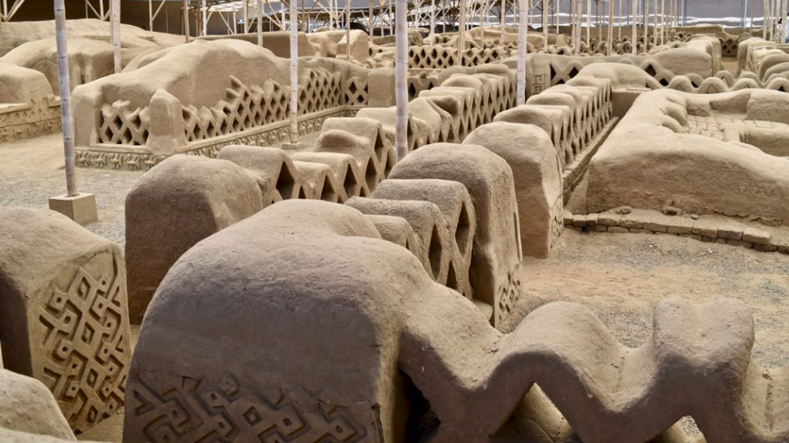
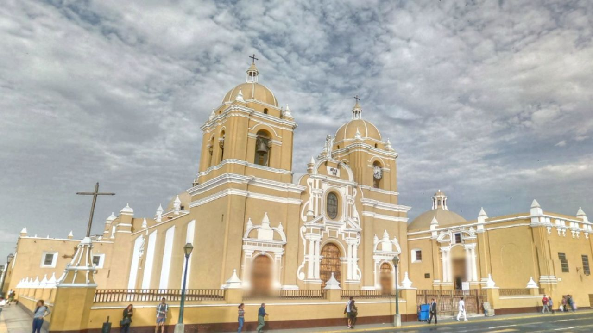
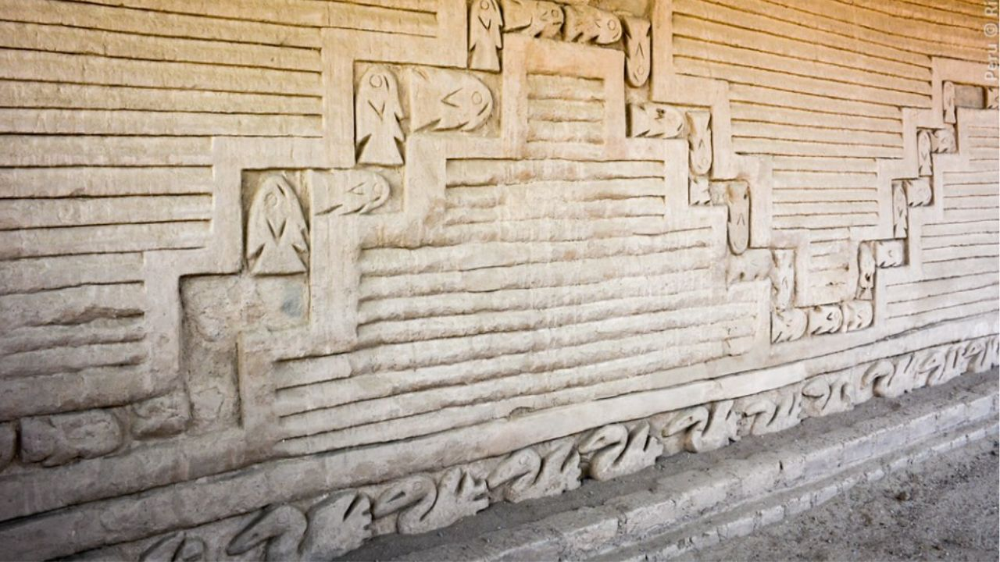

Excursión en Costa a Chan Chan



Descubre la capital del antiguo Reino Chimú.
La ciudad más grande de la era precolombina en Sudamérica.
Detalle
Vive la increíble experiencia arqueológica de "la Ciudad de la Eterna Primavera"; este tour te lleva a visitar los mejores lugares de Trujillo, con asistencia completa, guías turísticos de habla inglesa/hispana y cómodos vehículos con aire acondicionado.
Incluye:
- Todas las entradas
- Todo el transporte
- Guía de habla inglesa/hispana
No Incluye:
- Extras y propinas.
8:30AM
Traslado desde el terminal de cruceros.
9:00AM
Llegada al Templo del Sol y la Luna.
11:15AM
Al llegar a la ciudad colonial de Trujillo, tendremos que caminar por la plaza más grande y la Mansión colonial.
11:45AM
Llegada a la ciudad más grande de Adobe, antigua ciudad de América Chan Chan.
1:30PM
Visita al Pueblo de Pescadores de Huanchaco. Tendremos tiempo para almorzar por su cuenta. Después del almuerzo, regreso al terminal de cruceros.
2:30PM
Fin de nuestro servicio.
Servicio de Cruceros 2025
- Octubre 18, Miércoles. → MS ZAANDAM / Holland America
- Diciembre 16, Sábado. → OCEANIA MARINA / Oceania Cruises
- Diciembre 17, Domingo. → SILVER NOVA / Silver Sea
- Diciembre 18, Lunes. → SEVEN SEAS SPLENDOR / Regent Seven Seas
- Diciembre 21, Jueves. → SILVER NOVA / Silver Sea
- Enero 14, Domingo 2026. → SILVER NOVA / Silver Sea
- Enero 15, Lunes 2026. → NORWEGIAN SUN / Norwegian Cruise
- Enero 16, Martes 2026. → AZAMARA ONWARD / Azamara Cruises
Precio:
85$
Reservar Ahora